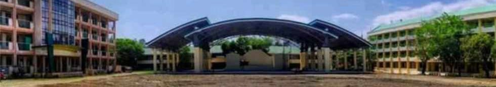

History
Marinduque National High School is formerly known as Marinduque Provincial High School, recognized as the first secondary school in the Province.
was established in the year 1914 by Municipal president Vicente Lardizabal Trivino, and served as the home of the Boac Boy Scout Trailers, one of the pioneer scouting units in the country organized on July 10, 1922, by Tenderfoot Scout Celso M. Mirafuente.
Bill No. 1328 on Marinduque Provincial High School's nationalization was signed into law, November 13, 1982, as Batas Pambansa Bilang 267. The school adopted its new name, Marinduque National High School (MNHS), in August 1984 when the first cash disbursement BCDC was released by the national government.